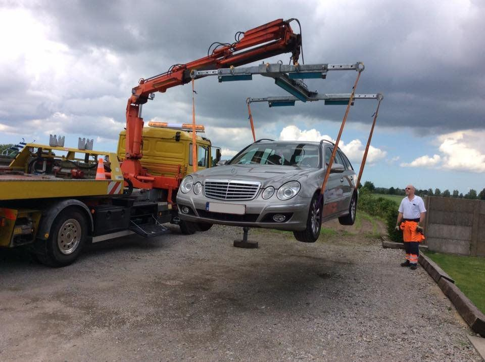
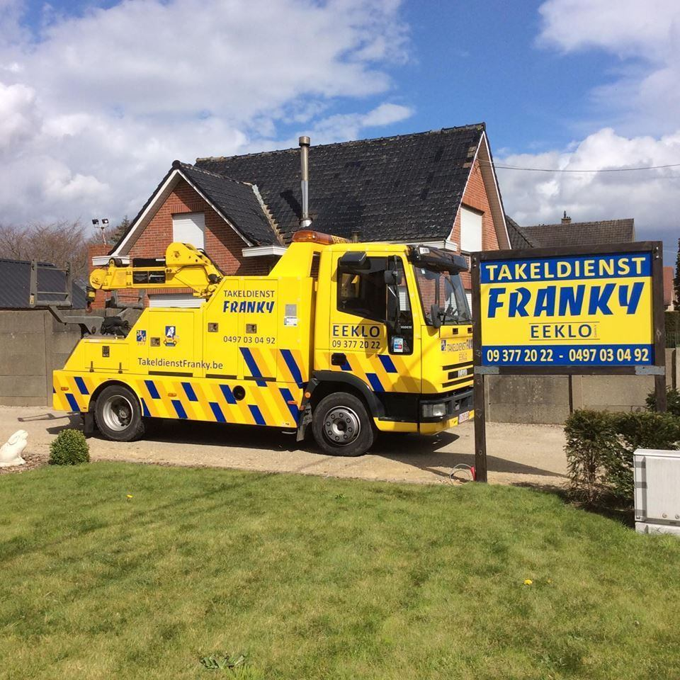
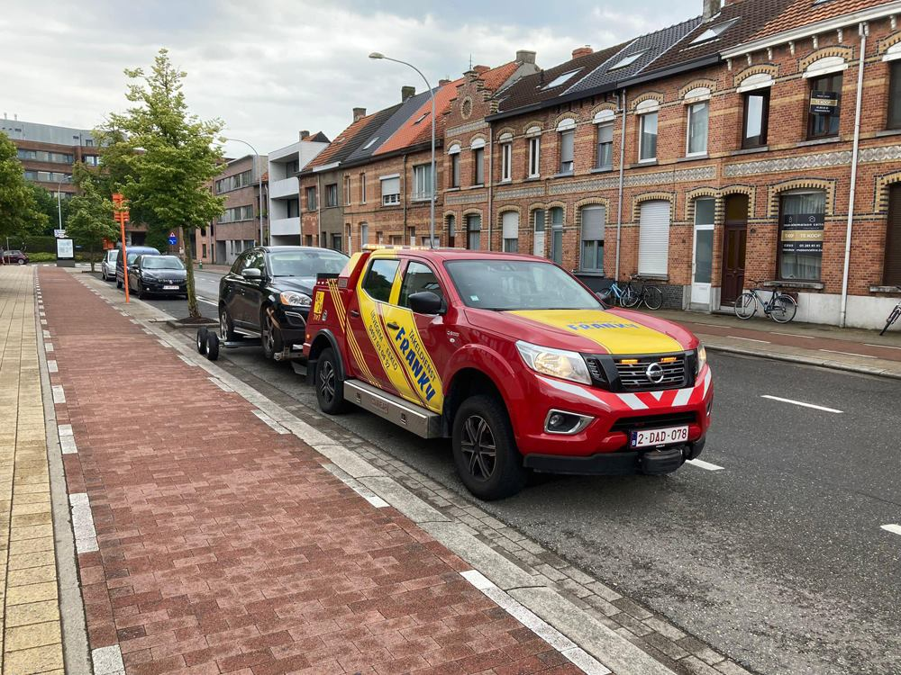
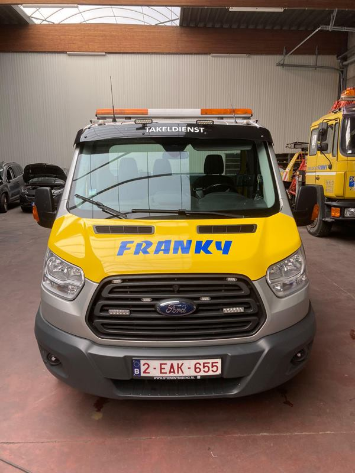
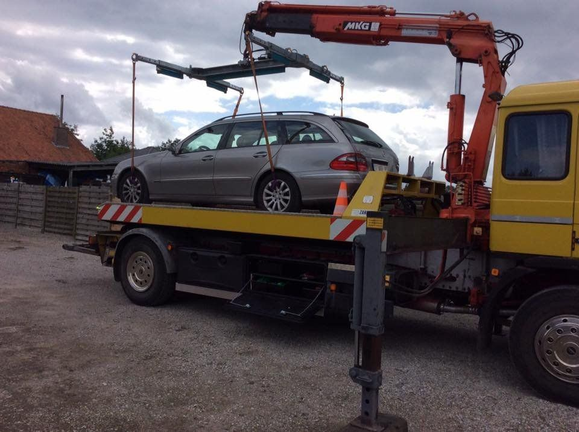
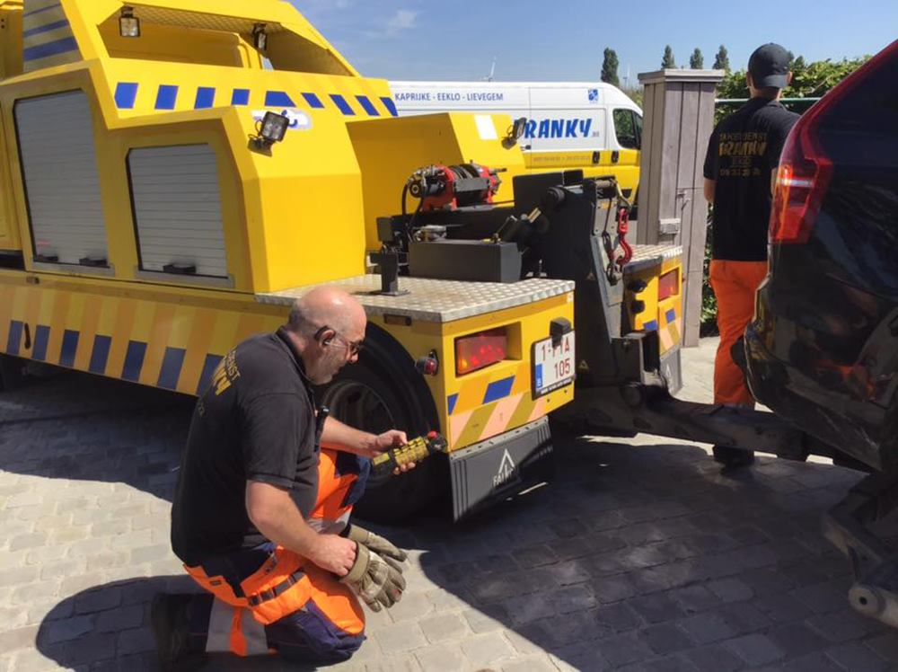

Depannage & takeldienst Auto, moto of lichte vracht, vlot en veilig weggetakeld.
Het wegtakelen of depanneren van uw auto, moto of lichte vracht is een kunst. Doe daarom beroep op een vakman met meer dan 30 jaar ervaring: Takeldienst Franky.

Wat Takeldienst Franky voor u doet
- Depannage bij pech: uw auto start niet of valt stil onderweg? Bel Franky, wij komen ter plaatse.
- Wegtakelen na een ongeval: uw voertuig kan niet meer rijden? Wij takelen het naar de garage, het schadeherstelbedrijf of het adres dat u kiest.
- Moto’s: een moto vraagt een andere aanpak dan een auto. Wij zetten hem veilig vast op het plateau.
- Lichte vracht: bestelwagens en lichte bedrijfsvoertuigen takelen we met het juiste materieel.
- Oldtimers en bijzondere wagens: uw klassieker gaat netjes en vastgesjord op het plateau, zonder slepen.
Het juiste materieel voor elk voertuig
Niet elk voertuig kan op dezelfde manier getakeld worden. Daarom heeft Takeldienst Franky verschillende wagens in eigen beheer:
Waar brengen we uw voertuig naartoe?
U kiest zelf: uw eigen garage, de dealer, een schadeherstelbedrijf of uw thuisadres. Kan het voertuig niet meteen ergens terecht, bespreek dan met ons of het tijdelijk in ons depot kan blijven staan.
Moet u zelf mobiel blijven terwijl uw auto hersteld wordt? Huur een vervangwagen bij Takeldienst Franky.
Waar takelen we?
Vanuit Lembeke en ons depot in Lievegem zijn we vlak bij de expresweg N49 - E34 en de N9. We rijden dagelijks in de regio rond Eeklo, Kaprijke, Lievegem, Evergem, Maldegem en Gent, en takelen doorheen heel Vlaanderen en Wallonië.
Eigen takelwagens, echte opdrachten
Geen stockfoto’s: dit is het materieel van Takeldienst Franky aan het werk.






Goed om te weten
Wat moet ik doen als mijn auto stilvalt op de snelweg?
Zet uw alarmlichten aan, trek een fluohesje aan en ga met uw passagiers achter de vangrail staan, weg van het verkeer. Plaats de gevarendriehoek als dat veilig kan. Bel daarna Takeldienst Franky. Staat u op een rijstrook of is er gevaar, bel dan eerst 112.
Takelen jullie ook moto's?
Ja. Moto's zetten we op het plateau en sjorren we veilig vast, zodat ze zonder schade op hun bestemming komen.
Takelen jullie ook bestelwagens?
Ja, wij takelen auto's, moto's en lichte vracht. Bel ons met het type voertuig, dan sturen we het juiste materieel.
Kan mijn auto in jullie depot blijven staan?
Bespreek het bij uw oproep. Wij hebben een depot in Lievegem (Waarschoot) en zoeken samen met u de beste oplossing.